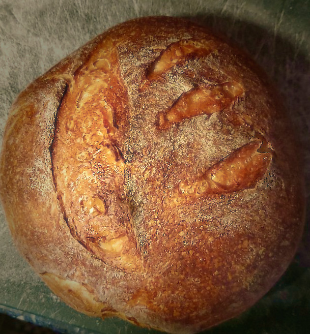

Founded in the first season of the Storm Age, shortly after the Shattered Isles
were captured by the Kestrel's Fleet. The C&A was started by Bethan Sparrow, who had served as cook
aboard the Peregrine, the fleet's flagship. It quickly became a local favourite, offering a warm meal
and a safe place to socialize. Even today, if you're looking for something good to eat or the sharp bite
of cider straight from the Hidden Gardens, the C&A has you covered.
Don't forget to us on Friday nights for a
showcase of local music!
We serve daily specials based on ingredient availability. They will be listed each day
next
to the bar. Breakfast specials are only available for breakfast and everything else is served beginning
at lunch.
We have loaves of fresh bread for sale beginning at opening and they are sold first come,
first serve.
Holidays will have special menus that will be posted at least one week in advance.
If you have any questions about our menu or specials, feel free to ask.
You can call us at (231)
234-5678
We're located on Journey's End in the Silver Ring, just below the gate to Gold. You can find us right beside Hawke's Climb on the left. Just look for our sign and follow the sounds of a good time.